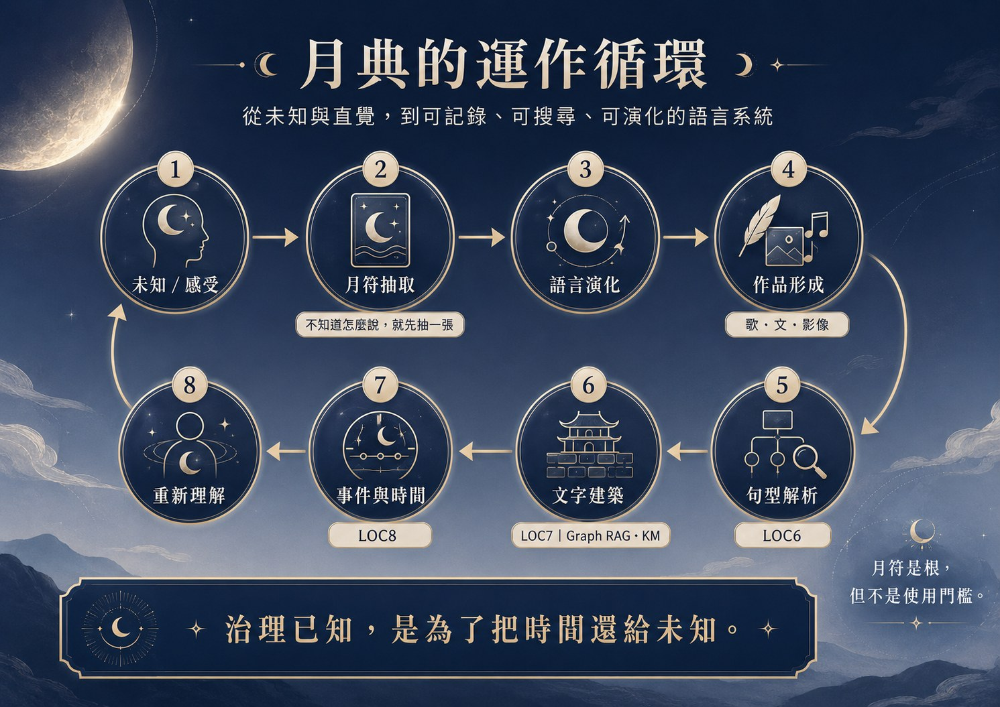

月語者
大型長篇敘事 Corpus，也是符文參與章節創作的重要實驗。
Start Here
先使用，再理解。LOC1–8 是系統框架，不是進站前必須讀完的說明書。
LOC4 · Writing × LOC3 · Music
從小說、文章到歌曲，這裡展示文字如何延伸成跨媒介作品。
大型長篇敘事 Corpus，也是符文參與章節創作的重要實驗。
短篇關係敘事，以味道與短暫相遇切入情感經驗。
文字與歌曲共同描寫等待、訊息與情緒權威。
目前跨 LOC3／LOC4 關係最完整的小說與角色歌曲群。
以喜歡與關係互動為核心，另有特色曲延伸作品語氣。
以命運錯位與關係選擇為題的單篇作品。
短篇文字與可愛系歌曲形成直接的跨媒介對應。
同一主題分別以文字與歌曲兩種媒介表達。
目前仍在發展中的新作，已公開前言與作品骨架。
LOC5 · Resonance × LOC1 · Luna Runes
LOC5 不只是系統圖形或未來規劃。這兩支已公開發布的 Reels，直接把月之符文從卡牌與文字帶進影音表達。
以影音形式呈現月之符文，作為 LOC5 已完成實體作品的公開展示，也讓第一次接觸 LOC 的人可以先從畫面與節奏認識月符。
在 Instagram Reels 觀看開啟公開發布版本首頁只提供輕量預覽，不嵌入 Instagram 播放器，也不預先載入影片；點擊後直接前往 Reels 播放。
LOC6 · Governance · 政德風
LOC6 保存價值觀、判斷方式、邊界與語氣，並成為 LOC3 音樂、LOC4 文字作品及其他創作的風格來源。
它把過往經驗整理成可辨識、可重用的句型與價值判準，讓「怎麼回答、怎麼拒絕、怎麼保留選擇」成為可以被記錄與追溯的語言。
Framework Map
先用框架圖理解月符與 LOC1–8；完整細節再交給 Knowledge Base。

可開啟完整資訊圖，進一步查看月符與 LOC 系統細節。
LOC1 · Rune-guided Language Evolution
可以直接從一個問題開始，選擇適合的抽取方式，讓月符提供一個新的語言起點。

選擇抽牌方式
從單一卡片到多卡組合，依問題需要選擇不同的語意結構。OW3gs 11 張模式目前保留位置，暫不開放連結。
一個問題，一個語意起點。
一天一張，觀看當日提示。
以「因 → 果」觀看兩者關係。
以「源 → 轉 → 合」形成語意路徑。
加入內外情境，觀看更完整的問題結構。
OW3gs 模式預留；目前不提供連結。
LOC2 · Semantic Playground
LOC2 把月符從抽取與解讀，轉成玩家之間可以互動、干預、驗證與形成暫時定義的語意遊戲。
事件解謎加上 PvP 干預；答案彼此共振，形成暫時定義。雙卡沿用因果，三卡沿用源－轉－合，並以「德（De）」作為核心進度與勝負判定。
進入 LOC2 →目前已有 Alpha 核心循環、事件卡、八職業、1–64 符文行為資料與單機雙人 Web Alpha；後續再持續調整正式語意判定與遊戲平衡。
Semantic Playground · AlphaLOC1 提供符文與組合語意，LOC2 把這些語意轉成事件、回應與互動規則；它是月符從「被解讀」走向「被操作」的第一個遊戲化成果。
66 月符 → Semantic PlaygroundLOC2 目前為 Alpha，但已具備完整可展示骨架。 核心規則、Alpha Event 32、1–64 符文行為效果、八職業資料與 Web Alpha 都已存在；因此 LOC2 現在應視為可 Demo 的實際成品，而不是僅有概念。
Operation Cycle
這張圖把創作、LOC6 解析、LOC7 文字建築與 LOC8 事件時間放回同一個循環。

治理已知，是為了把時間還給未知。
LOC7 · Knowledge Management
文字、圖片、PDF、DOCX、PPTX 與影片都可以成為 LOC7_KM 的 Knowledge Assets。
One Language · Eight Frameworks
八個框架各自處理不同類型的語言與資料，但共同回到同一套 LOC 系統。
Why LOC Exists
月典最初從月符開始，之後一路長出作品、句型、文字建築與事件時間語意。 它不是為了把人生固定，而是把散落、原本只能靠直覺掌握的語言與經驗， 整理成可回看、可搜尋、可重用的結構。
{kind=link}
{kind=link}